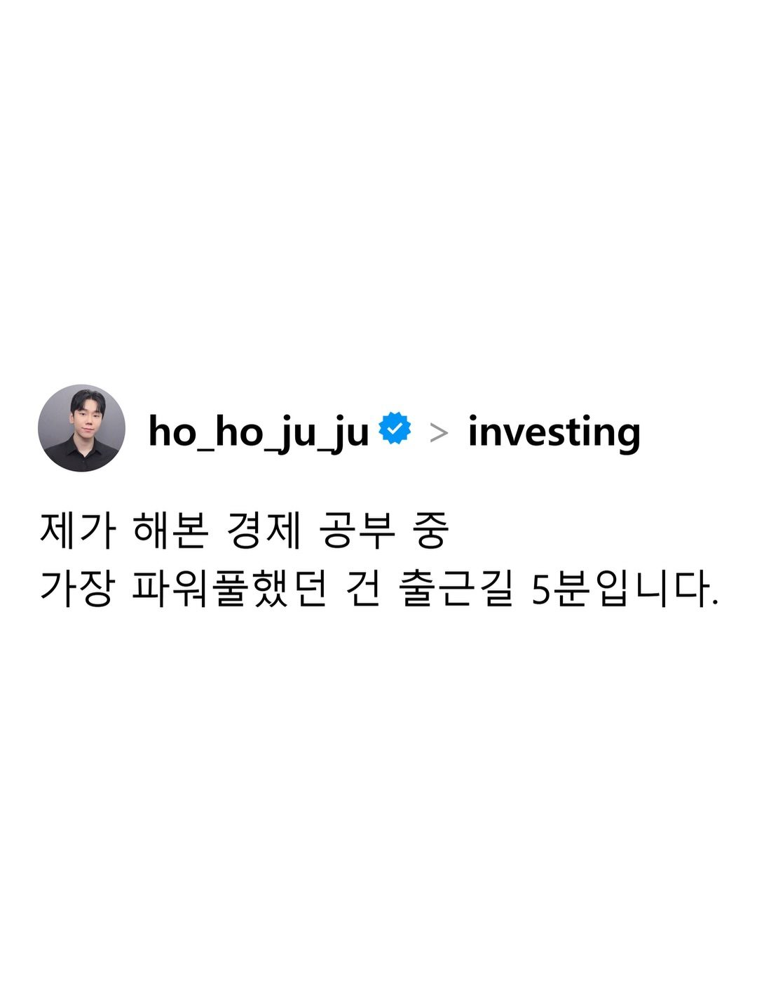

경제·투자 · 인스타그램 · 2026-11-23
KB 리서치 모닝코멘트로 하는 출근길 5분 경제 공부법
네이버 증권에서 매일 아침 올라오는 2장짜리 KB 리서치 모닝코멘트를 읽고, 뉴스를 매크로·실적·산업 세 갈래로 분류한 뒤 "그래서 뭐가 달라지지?"를 생각하는 출근길 경제 공부 루틴을 소개한다.

- KB 리서치 모닝코멘트는 네이버 증권 → 리서치 → 데일리에서 찾아 PDF 원문 보기로 열 수 있다.
- 모닝코멘트는 보통 아침 8시~8시 30분 사이에 올라오고 2장 분량이라 출근길에 읽기 좋다.
- STEP 1은 뉴스를 매크로(금리·환율·유가·물가·연준·전쟁), 실적·기업(실적·가이던스·수주), 산업·테마(AI·반도체·전력) 세 가지로 분류하는 것이다.
- STEP 2는 뉴스 한 줄마다 "그래서 뭐가 달라지지?"를 붙여 시장 영향을 속으로 생각해 보는 것이다.
- 11/13 자료 예시에서 미국 10년물 국채금리가 5.13%까지 급등하자 채권만 들고 있어도 5%인데 굳이 주식을 살지 생각해 볼 수 있다고 설명한다.
- 젠슨 황 사퇴 뉴스가 가장 시끄러워도 분류하고 생각해 보면 그날 시장을 누르는 것은 금리 쪽임이 보인다고 말한다.
- 모르는 단어는 메모해 두고 구글 검색이나 AI로 찾아보며, 처음엔 10분 넘게 걸려도 괜찮다고 조언한다.